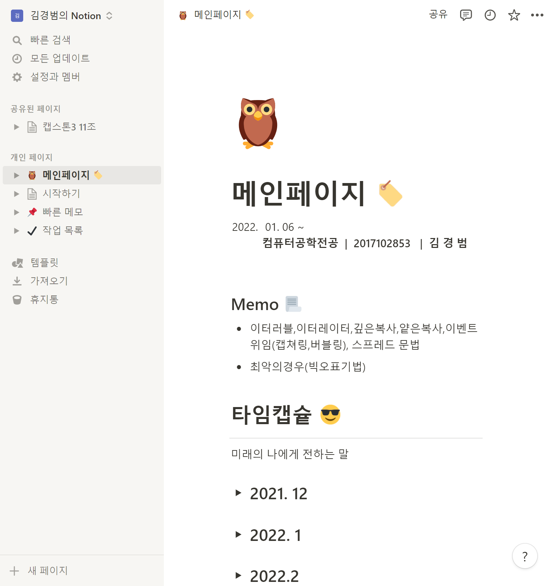

모든 팀을 위한
하나의 워크스페이스
Notion은 단순한 워드프로세서가 아닙니다. 내 스타일에 맞게 커스텀해서 사용하세요
Notion을 사용하는 파트너
이미지
이미지
이미지
이미지
이미지

혼란은 줄이고, 팀워크는 높이고
팀원들을 Notion에 모으고 프로젝트와 문서를 함께 관리하세요. 협업이 쉬워지고 목표 달성이 빨라집니다.


"이거 뭐에 관한 거였지?" 시간 낭비는 이제 그만
업데이트되지 않는 위키, 여러 곳에 흩어진 문서는 시간 낭비의 주범이죠. Notion에서는 모든 업무 내용과 정보를 한데 관리하고 워크플로를 바로 파악할 수 있어요.

유연한 워크플로 디자인
내 업무 스타일에 맞게 Notion을 커스텀해 보세요. 드래그 & 드롭으로 대시보드, 웹사이트, 문서, 시스템을 간편하게 만들 수 있습니다.

글로벌 크리에이터 생태계 활용하기
커뮤니티에서 만든 수많은 템플릿과 API 통합, 다양한 이벤트에서 아이디어를 얻어보세요.
매번 지원 요청을 하지 않아도 늘 리소스가 곁에 있을 거예요.

모든 팀을 아우르는 끝없이 다양한 활용법
모든 팀이 공통으로 겪는 문제도, 각 팀의 특수한 문제도, 전부 Notion을 통해 해결할 수 있습니다. 이 페이지의 예시보다 무궁무진하게 많은 것들이 가능해요!